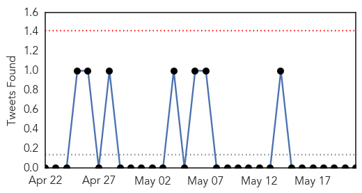
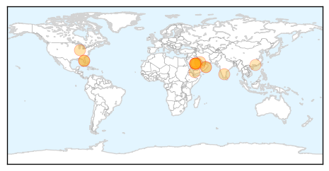

Chikungunya
30-Day Web Trend
2 alerts, 3 warnings

30-Day Twitter Trend
0 alerts, 0 warnings

Article Locations

Article Confidences

Top Articles:
- 0.998
- Mosquito-Borne Breaking Bone Disease Spreads In Haiti
- 0.954
- Chikungunya fever confirmed in Palm Beach County man
- 0.953
- New Facility to Detect and Respond to Outbreaks of Infectious Disease
- 0.950
- WINN FM 98.9 - Twenty confirmed cases of Chikungunya in St. Kitts
- 0.915
- Mosquito-borne Chikunguna cases reported in Miami — MercoPress
Top Tweets:
-
No tweets found for May 21, 2014
MERS
30-Day Web Trend
9 alerts, 15 warnings
30-Day Twitter Trend
0 alerts, 0 warnings

Article Locations
Article Confidences
Top Articles:
- 1.000
- Fear of Mers Corona disease spreading in coastal region?
- 0.999
- CDC Expert What Illinoisans Need to Know About MERS
- 0.999
- Baystate's Dr. Sarah Haessler says 'don't panic' about MERS, but keep informed
- 0.995
- Suspected cases of MERS investigated in Virginia
- 0.995
- MERS-CoV infects four more in Saudi Arabia
- 0.993
- Only two MERS deaths in Oman so far: MoAF
- 0.993
- Only two MERS deaths in Oman so far MoAF
- 0.972
- Cook camel meat well if you must eat
- 0.956
- Fakeih: Containing MERS 'top priority'
- 0.952
- Call for cooperation on MERS
- 0.914
- Ziad Memish: father of mass gatherings medicine
- 0.851
- review of Huiling Ding, 'Rhetoric of Global Epidemic: Transcultural Communication about SARS'
- 0.729
- Bahrain praises Saudi Arabia's efforts to combat coronavirus
- 0.602
- US lab offers real time DNA testing of MERS-infected people
Top Tweets:
-
No tweets found for May 21, 2014